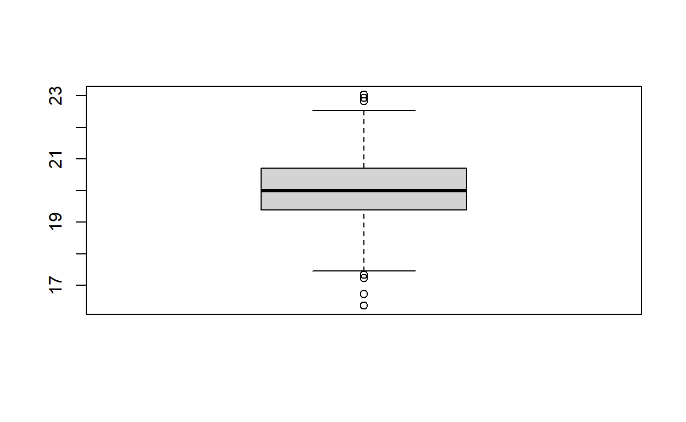
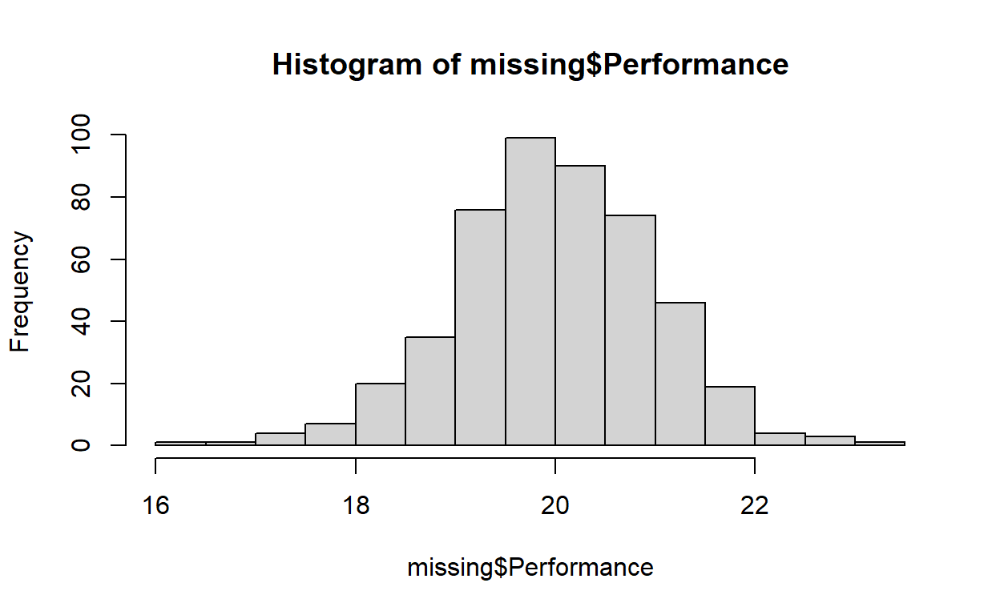
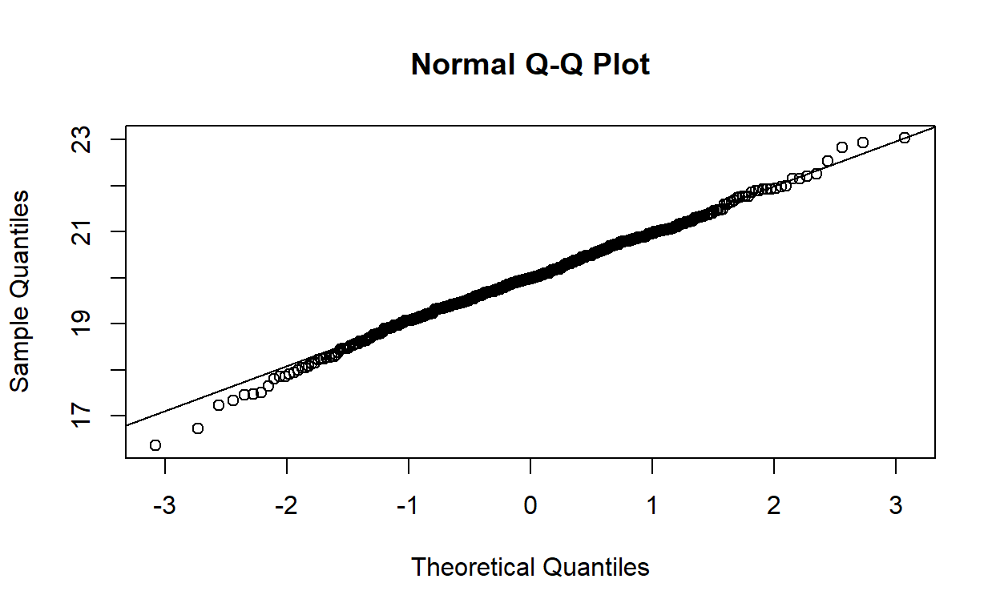
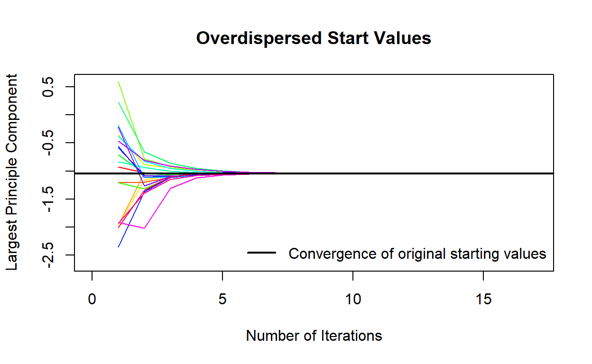
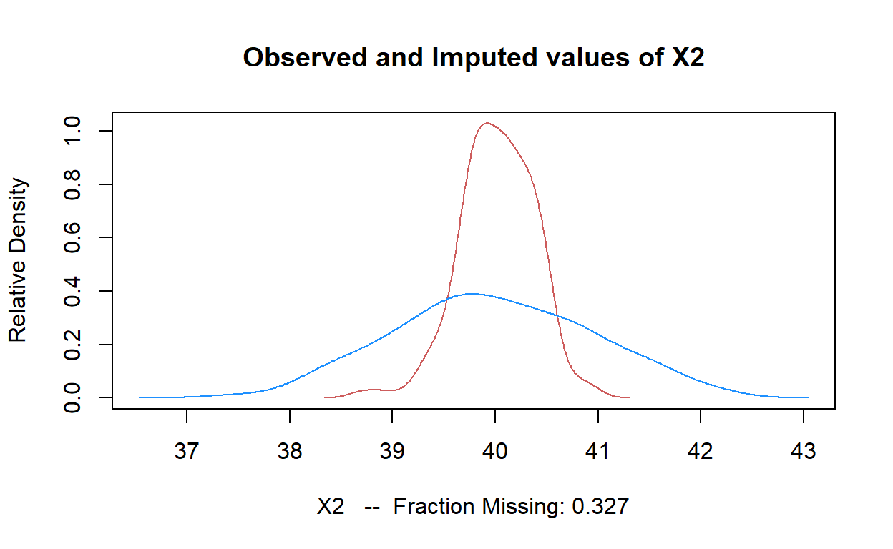
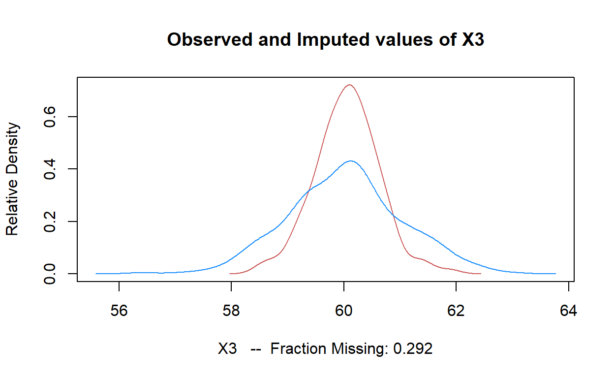

Assumptions and Missing Data
Overview
This tutorial focuses on ANOVA assumptions and dealing with missing data.
The PowerPoint slides for the presentation in the videos are on Canvas if you want a standalone copy.
The videos (as well as others) can also be found on my YouTube channel https://www.youtube.com/channel/UC5kDZTyHZlgSgSEa3YQXOi
Learning Objectives
List the steps involved in data screening
Explain the assumptions underlying ANOVA
Check data accuracy and assumptions
Employ transformations
Distinguish between the different types of missing data
Get sassy with your advisor if they use listwise deletion or other problematic strategies
Describe limitations and advantages of different approaches to missing data
Conduct Multiple Imputation and Maximum Likelihood
Scream “Likelihood to the MAX!!!! Take that missing data” as you complete your homework
Data
missing is the datafile used in exercises. These data examine the job performance (Perfomance), job satisfaction (Satisfaction), well being (WellBeing), and research condition (Condition)
Packages
This tutorial uses the following new packages:
DescToolsfor data screeninglavaanfor Maximum LikelihoodAmeliafor multiple imputationZeligfor doing stuff to Amelia objects (also, to make you cringe when you realize that Zelig is a movie by Woody Allen and remembering that he married his daughter)
Video 1 Data Accuracy
Picture made by Ernesto Aberson, tech wiz kid.
Quiz
Video 2 ANOVA Assumptions
Video 3 Checking Assumptions
Video 4 Transformations
Data screening and transformation in R
Using the missing data, we will demonstrate a few approaches for screening and transformation. Most of the analyses are pretty straightforward.
Boxplots
boxplot(missing$Performance)
Histograms
hist(missing$Performance)
Q-Q Plots
Not as good as P-P plots
qqnorm(missing$Performance);qqline(missing$Performance)
Transformations
I always try to name the new variable after the transformation to keep stuff straight.
(Note: this variable looks fine but we’ll go through the process anyway)
missing$Perf_sq<-sqrt(missing$Performance+1)
missing$Perf_log<-log10(missing$Performance+1)
missing$Perf_inv<-1/(missing$Performance+1)Now run skew and kurtosis using DescTools.
DescTools::Skew(missing$Perf_sq, na.rm=TRUE, method = 2, conf.level = .99) ## skew lwr.ci upr.ci
## -0.2330067 -0.6343711 0.1054655DescTools::Kurt(missing$Perf_sq, na.rm=TRUE, method = 2, conf.level = .99) ## Warning in norm.inter(t, adj.alpha): extreme order statistics used as endpoints## kurt lwr.ci upr.ci
## 0.54511931 -0.05298183 1.71907245DescTools::Skew(missing$Perf_log, na.rm=TRUE, method = 2, conf.level = .99) ## skew lwr.ci upr.ci
## -0.323234653 -0.797724956 0.004589513DescTools::Kurt(missing$Perf_log, na.rm=TRUE, method = 2, conf.level = .99)## Warning in norm.inter(t, adj.alpha): extreme order statistics used as endpoints## kurt lwr.ci upr.ci
## 0.6521062 0.0173462 1.8673117DescTools::Skew(missing$Perf_inv, na.rm=TRUE, method = 2, conf.level = .99) ## Warning in norm.inter(t, adj.alpha): extreme order statistics used as endpoints## skew lwr.ci upr.ci
## 0.5096351 0.1918563 0.9910106DescTools::Kurt(missing$Perf_inv, na.rm=TRUE, method = 2, conf.level = .99)## Warning in norm.inter(t, adj.alpha): extreme order statistics used as endpoints## kurt lwr.ci upr.ci
## 0.96515026 0.08198053 2.83226126Don’t worry about the warnings. These are just saying you have outliers.
Exercise
Using the missing dataset screen and transform the Satisfaction variable. Use at least one graph (whatever you like), get skew and kurtosis values and then apply all three transformations (even if it doesn’t need to be transformed).
First the plots.qqnorm(missing$Satisfaction);qqline(missing$Satisfaction)Now the Skew and Kurtosis
DescTools::Skew(missing$Satisfaction, na.rm=TRUE, method = 2, conf.level = .99)
DescTools::Kurt(missing$Satisfaction, na.rm=TRUE, method = 2, conf.level = .99)And the transformations
missing$Sat_sq<-sqrt(missing$Satisfaction+1)
missing$Sat_log<-log10(missing$Satisfaction+1)
missing$Sat_inv<-1/(missing$Satisfaction+1)Now let’s run skew and kurtosis for the transformed variables (I’ll ask you questions about these after the next video)
DescTools::Skew(missing$Sat_sq, na.rm=TRUE, method = 2, conf.level = .99)
DescTools::Kurt(missing$Sat_sq, na.rm=TRUE, method = 2, conf.level = .99)
DescTools::Skew(missing$Sat_log, na.rm=TRUE, method = 2, conf.level = .99)
DescTools::Kurt(missing$Sat_log, na.rm=TRUE, method = 2, conf.level = .99)
DescTools::Skew(missing$Sat_inv, na.rm=TRUE, method = 2, conf.level = .99)
DescTools::Kurt(missing$Sat_inv, na.rm=TRUE, method = 2, conf.level = .99)Video 5: Analyses
Interpreting Skew and Kurtosis
DescTools::Skew(missing$Satisfaction, na.rm=TRUE, method = 2, conf.level = .99)## skew lwr.ci upr.ci
## 0.1352465 -0.1147244 0.4683455DescTools::Kurt(missing$Satisfaction, na.rm=TRUE, method = 2, conf.level = .99)## Warning in norm.inter(t, adj.alpha): extreme order statistics used as endpoints## kurt lwr.ci upr.ci
## -0.2086185 -0.6240590 0.7622532DescTools::Skew(missing$Sat_sq, na.rm=TRUE, method = 2, conf.level = .99)## skew lwr.ci upr.ci
## 0.1028799 -0.1639246 0.4433269DescTools::Kurt(missing$Sat_sq, na.rm=TRUE, method = 2, conf.level = .99)## Warning in norm.inter(t, adj.alpha): extreme order statistics used as endpoints## kurt lwr.ci upr.ci
## -0.2198144 -0.6412049 0.5981657DescTools::Skew(missing$Sat_log, na.rm=TRUE, method = 2, conf.level = .99)## skew lwr.ci upr.ci
## 0.07054461 -0.18230356 0.44441227DescTools::Kurt(missing$Sat_log, na.rm=TRUE, method = 2, conf.level = .99)## kurt lwr.ci upr.ci
## -0.2274226 -0.6538177 0.4975365DescTools::Skew(missing$Sat_inv, na.rm=TRUE, method = 2, conf.level = .99)## skew lwr.ci upr.ci
## -0.005918361 -0.323983889 0.261455527DescTools::Kurt(missing$Sat_inv, na.rm=TRUE, method = 2, conf.level = .99)## kurt lwr.ci upr.ci
## -0.2320347 -0.6184170 0.4042967Video 6: Missing Data
Video 7: Historical Approaches
Video 8: “Modern” Approaches
Video 9: Multiple Imputation
Exercises
Running Imputations
Feed R the name of the data and indicate which variables are categorical (noms).
mi <- Amelia::amelia(missex, m=20, noms = "condition")## -- Imputation 1 --
##
## 1 2 3 4 5 6 7 8 9
##
## -- Imputation 2 --
##
## 1 2 3 4 5 6 7 8
##
## -- Imputation 3 --
##
## 1 2 3 4 5 6 7 8 9 10
##
## -- Imputation 4 --
##
## 1 2 3 4 5 6 7 8 9
##
## -- Imputation 5 --
##
## 1 2 3 4 5 6 7
##
## -- Imputation 6 --
##
## 1 2 3 4 5 6 7
##
## -- Imputation 7 --
##
## 1 2 3 4 5 6 7 8 9
##
## -- Imputation 8 --
##
## 1 2 3 4 5 6 7 8 9
##
## -- Imputation 9 --
##
## 1 2 3 4 5 6 7
##
## -- Imputation 10 --
##
## 1 2 3 4 5 6 7 8
##
## -- Imputation 11 --
##
## 1 2 3 4 5 6 7
##
## -- Imputation 12 --
##
## 1 2 3 4 5 6 7 8
##
## -- Imputation 13 --
##
## 1 2 3 4 5 6 7 8
##
## -- Imputation 14 --
##
## 1 2 3 4 5 6 7
##
## -- Imputation 15 --
##
## 1 2 3 4 5 6 7
##
## -- Imputation 16 --
##
## 1 2 3 4 5 6 7
##
## -- Imputation 17 --
##
## 1 2 3 4 5 6 7 8 9 10
##
## -- Imputation 18 --
##
## 1 2 3 4 5 6 7 8
##
## -- Imputation 19 --
##
## 1 2 3 4 5 6 7 8
##
## -- Imputation 20 --
##
## 1 2 3 4 5 6 7Perform the Diagnostics
Amelia::disperse(mi, dims = 1, m = 20)
plot(mi, which.vars=2)
plot(mi, which.vars=3)
Finally, pool the analyses.
z.out <- zelig(X2 ~ condition, model= "ls", data= mi) #do the computes etc.## Warning: `tbl_df()` is deprecated as of dplyr 1.0.0.
## Please use `tibble::as_tibble()` instead.
## This warning is displayed once every 8 hours.
## Call `lifecycle::last_warnings()` to see where this warning was generated.## Warning: `group_by_()` is deprecated as of dplyr 0.7.0.
## Please use `group_by()` instead.
## See vignette('programming') for more help
## This warning is displayed once every 8 hours.
## Call `lifecycle::last_warnings()` to see where this warning was generated.## How to cite this model in Zelig:
## R Core Team. 2007.
## ls: Least Squares Regression for Continuous Dependent Variables
## in Christine Choirat, Christopher Gandrud, James Honaker, Kosuke Imai, Gary King, and Olivia Lau,
## "Zelig: Everyone's Statistical Software," https://zeligproject.org/summary(z.out)## Model: Combined Imputations
##
## Estimate Std.Error z value Pr(>|z|)
## (Intercept) 40.0430 0.0714 560.56 <2e-16
## conditionTreat -0.1081 0.0991 -1.09 0.28
##
## For results from individual imputed datasets, use summary(x, subset = i:j)
## Next step: Use 'setx' methodExercises
Using the datafile missing2 from perform multiple imputation, get diagnostics for the second and third variables, and an analysis of Satisfaction predicted by Condition.
First, do the imputations
mi <- amelia(missing2, m=20, noms = "Condition")Now, the diagnostics.
Amelia::disperse(mi, dims = 1, m = 20)
plot(mi, which.vars=2)
plot(mi, which.vars=3)And finally, the pooling.
z.out <- zelig(Satisfaction ~ Condition, model= "ls", data= mi)
summary(z.out)